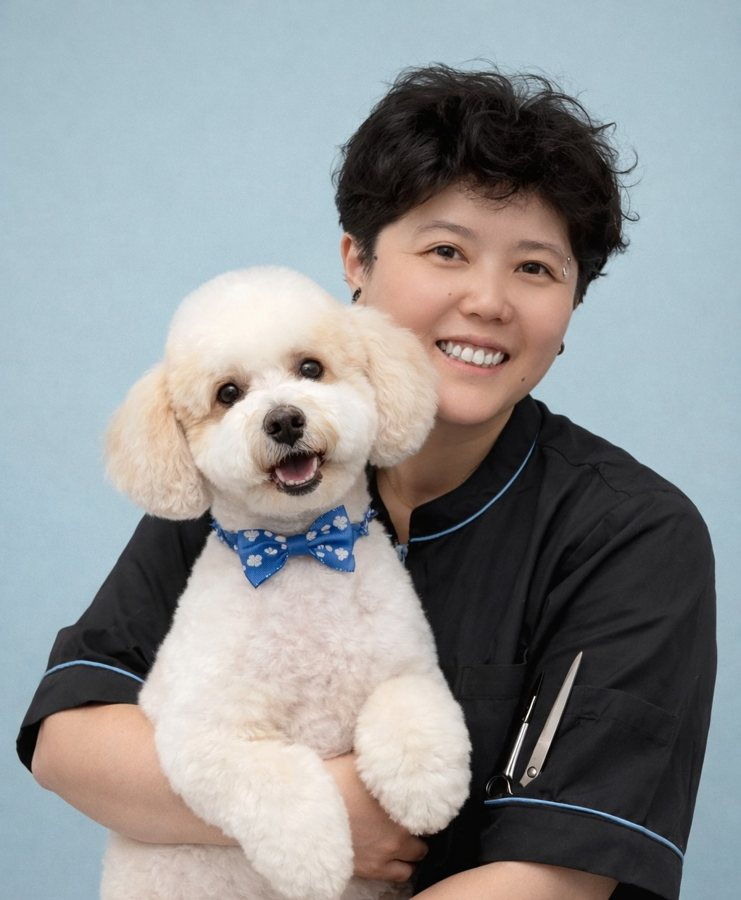

|
|
Korean and Japanese-style round faces, fluffy coats and teddy bear cuts, shaped by hand at Kokoni Pet Salon.
Asian Fusion, also known as Japanese dog grooming or Korean-style dog grooming, is our most detailed style. Instead of clipping the body short, we leave the coat longer and shape it with scissors, so your dog ends up with a soft, round face, rounded ears and an even, fluffy body. Many owners call it a teddy bear head, often paired with round, flared "bell-bottom" legs. It's the look many people know from Japanese grooming salons and Korean dog groomers.
It starts in the bath. After a Hydra luxury shampoo and conditioner, we hand-dry and straighten the coat, much like a blow-out at a hair salon, to give it volume. Only a fluffed, even coat can be scissored into a truly round muzzle, face and ears. Because it's all done by hand, Asian Fusion takes longer than a standard haircut.
 Compare with our Simply Cute style →
Compare with our Simply Cute style →
16–30 lbs $130 · 31–50 lbs $190 · 51–70 lbs $240. Includes bath, hand blow-out, nail trim, ear cleaning and teeth brushing.
16–30 lbs $170 · 31–50 lbs $240 · 51–70 lbs $290. Doodle coats need extra time and care.
Please ask us first. Prices are a quote and can change with size, coat length and the style you choose.

1381 E Las Tunas Dr # 11
San Gabriel, CA 91776
626-621-4646
Text or Call
By appointment only —
please check our online booking for available time slots